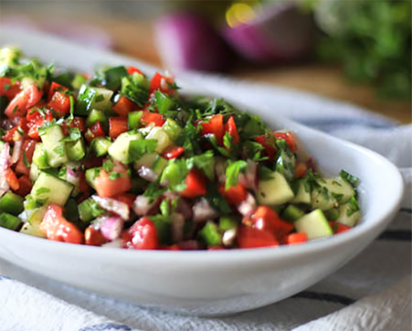

Egyptian Salad

Description
For Egyptians this is salata baladi. The most basic, most common, and, in my opinion, most perfect of salads. To others it’s known as salata Arabiya, salad-e Shirazi, shepherd’s salad, and it probably has many, many more names. But salata baladi by other name would be just as bright, crisp and refreshing.
Salata baladi is very quick and easy to put together. You simply dice your veggies and dress with lemon, olive oil, salt and pepper, and other spices if you choose. That’s it.
Ingredients
- 2 persian cucumbers or equivalent amount of other cucumber type
- 3 plum tomatoes or other small firm tomato
- 1/2 medium onion red or yellow
- handful parsley leaves and soft stems
- 1 lemon juiced
- 2 tbsp olive oil
- salt and pepper to taste
- cumin, sumac, Aleppo pepper or cayenne pepper to taste, optional
Steps
- Dice cucumbers, tomatoes, onion, and parsley.
- Toss with lemon juice and olive oil. No need to make your dressing separately, just add to the salad directly.
- Season with salt and pepper, tasting as you go. This salad benefits from a good amount of salt, as it brings out the bright, acidic lemon flavour.
- Add additional spices, if desired. Cumin is commonly used, as are sumac and chile peppers such as Aleppo pepper for a mild fruity heat, or cayenne for a spicier salad. I usually only add one or two spices, so as to not muddle the fresh flavour of the salad.